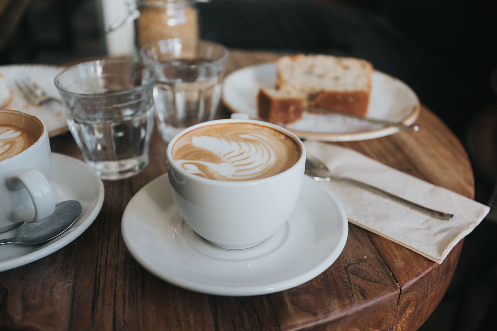
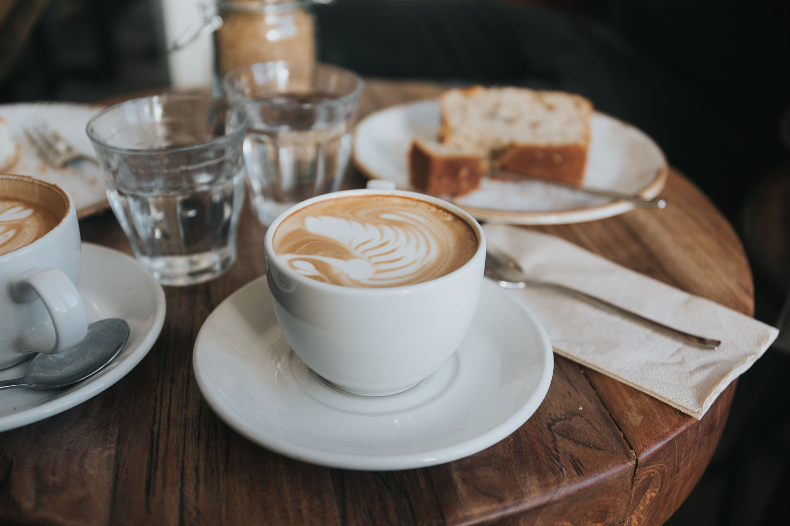

Frisches Gebäck von nebenan
Als es die ersten Hügel des Kursivgebirges erklommen hatte, warf
es einen letzten Blick zurück auf die Skyline seiner Heimatstadt
Buchstabhausen, die Headline von Alphabetdorf. Wehmütig lief ihm
eine rhetorische Frage über die Wange, dann setzte es seinen Weg
fort. Unterwegs traf es eine Copy. Die Copy warnte das
Blindtextchen, da, wo sie herkäme wäre sie zigmal umgeschrieben
worden und alles, was von ihrem Ursprung noch übrig wäre, sei das
Wort "und" und das Blindtextchen solle umkehren und wieder in sein
eigenes, sicheres Land zurückkehren.


 
